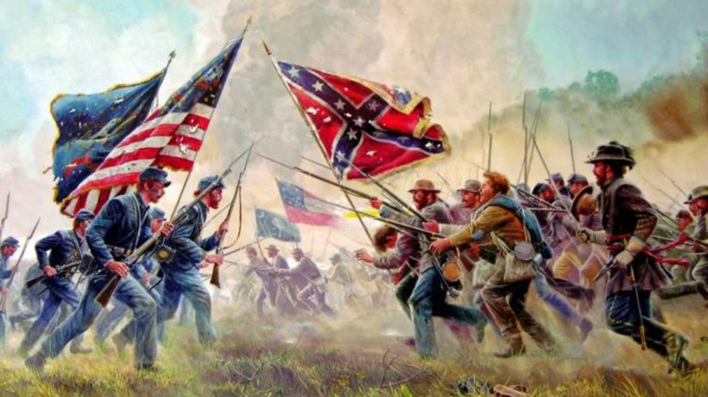

Early Years

Early Years

Lincoln's childhood home - A log cabin in Kentucky.
Early Years Information
Lincoln was born into poverty. He was born in a log cabin in Kentucky which he and his family lived in. Being born in poverty made him different from most other presidents since they were usually born into wealthy or influential families. Later, Lincoln's family moved to Indiana and then Lincoln worked at a store where he earned the name “honest abe”. He earned his nickname because the customer overpaid by a little bit, but Lincoln went out of his way when the store closed to give the customer back the change. Later, Lincoln joined the army, became a lawyer, got married, and had a family. This is when he started becoming involved in law and politics.
Accomplishments

Accomplishments

This is part of Lincoln's Ghettysburg Address
Accomplishments Information
Abraham Lincoln accomplished many things while president, as he was president during a dark time in the country. The civil war was happening and Lincoln helped make the republican party strong. The republicans ended up winning and helped abolish slavery. During his time as president, Lincoln made the gettysburg address and emancipation proclamation, also in favor of freeing the slaves. All his accomplishments earned him the Lincoln memorial.
Challenges

Challenges